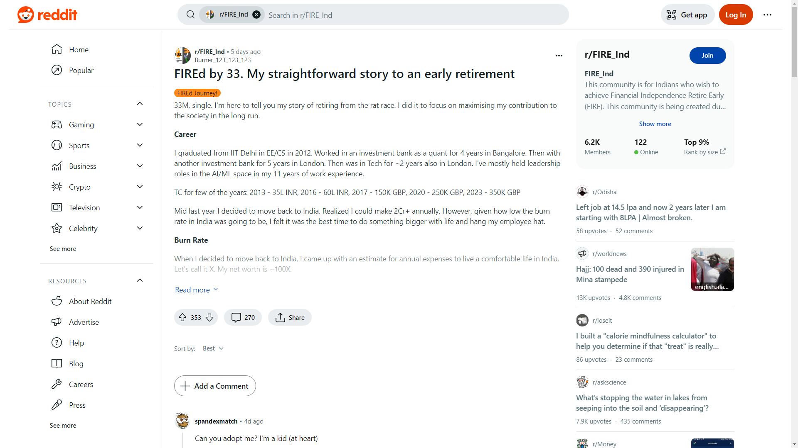

Back to Index
FIREd by 33. My straightforward story to an early retirement
2024-01-19 TheOrdinaryIndian

FIREd Journey!
33M, single. I'm here to tell you my story of retiring from the rat race. I did it to focus on maximising my contribution to the society in the long run.
Career
I graduated from IIT Delhi in EE/CS in 2012. Worked in an investment bank as a quant for 4 years in Bangalore. Then with another investment bank for 5 years in London. Then was in Tech for ~2 years also in London. I've mostly held leadership roles in the AI/ML space in my 11 years of work experience.
TC for few of the years: 2013 - 35L INR, 2016 - 60L INR, 2017 - 150K GBP, 2020 - 250K GBP, 2023 - 350K GBP
Mid last year I decided to move back to India. Realized I could make 2Cr+ annually. However, given how low the burn rate in India was going to be, I felt it was the best time to do something bigger with life and hang my employee hat.
Burn Rate
When I decided to move back to India, I came up with an estimate for annual expenses to live a comfortable life in India. Let's call it X. My net worth is ~100X.
I decided I will live with my parents for some time, as I hadn't lived with them for the last 15 years, and don't know when I will get an opportunity like this again. Due to this, my burn rate is currently lower than X (0.25-0.5X).
My biggest recurring expenses are cabs, restaurants and a gym membership. One-off expenses are flights to visit people in other parts of India and projects like a recent wardrobe upgrade.
Both my parents are financially independent, which ensures I don't need to worry about supporting them financially as they age.
Back to India
I imagined myself returning to India in the long run. Some of the key reasons being:
- to be there for my parents as they age
- settled life (family and kids) is easier in India given the support structure we have (parents, relatives, help etc)
- felt if I stayed in the West I would get stuck being the hamster in the wheel due to cost of living; moving to India would allow me to leave the rat race and give back by helping people
- I know in the far future I want to help underprivileged children and I feel India is the most natural place for me to do that
I'd thought I would move back in my 40s, however a few things made me take the decision to move back sooner:
- Not seeing eye to eye with my London employer due to a sudden and drastic deterioration in their culture
- I felt the economy there was not going to do that well over the next decade whereas India should
- I've found it difficult to find a partner in London who would be open to living in India in the long run
Current lifestyle
The more I think about it, the more I feel that there are mostly 3 main meta-priorities in life: Health, Relationships and Wealth. I'm prioritising Health and Relationships a lot more now.
Health - I've been into nutrition, weight training, anti-ageing research for 15 years now. I'm fairly fit (BFP < 12%, athletic, no health issues etc). And, I'm doubling down. Started doing yoga 3-4 days per week in addition to the existing 3-4 days of weight training to improve my flexibility. I became a teetotaller beginning of 2023.
It took some time to get my parents on board with my diet but now things work very smoothly at home. Food choices in restaurants are still painful, very difficult to easily find restaurants or items on menu that are good (healthy, not over flavoured, low carb high protein).
Relationships - I'm spending significant time with parents now that I'm living with them, a lot of things to catch up on. We're slowly getting on the same page about several things. I'm reconnecting with all my friends who live in India. I'm meeting new people through salsa socials (been dancing for 6-7 years), gym/yoga, partner search apps etc. I've time to have long and deep long term conversations, and work on small projects with my friends. In a way, I swapped time with colleagues for time with my friends and family. To be fair a third of my good friends are ex-colleagues.
Other activities - I'm pushing myself to become more of a producer rather than consumer. So I'm writing more (hi!), tweeting more (@is_that_ish), started podcasting again ( linktr.ee/theordinaryindian
). In general I was always big on reading, listening to podcasts/lectures, learning new things, so I still spend a lot of time doing that. I'm also exploring spirituality and religious texts more (non-dogmatic parts of multiple religions) albeit slowly.
Portfolio
Interestingly, I didn't do enough investing during most of my 20s. Especially didn't invest in the markets for most of my 20s as I didn't buy into the "markets go up, just dollar cost average into them" rhetoric. Working in investment banks also made it a bit difficult to invest due to conflict of interest related restrictions, so mostly ignored it. My main priority was to make as much money as possible, save as much of it as possible and not lose it.
Still ended up being 50%+ invested due to pension contributions, getting stocks in compensation, parents pushing for things like PPF, investing in real estate etc. End of 2021 when I left the banking world and moved to Tech, I started becoming more active with investing and trading. I started with single stocks and selling covered call options. I felt I had missed out on the massive bull run and needed to start educating myself more in trading and investing.
Today I have a lot more control over my net worth (have a dashboard through which I can see the overall state of my net worth at any point). Through a combination of passive income (rent + dividends + interest + coupons), active income (trading in equities, government bonds, and options & futures on equities & commodities) and passive growth (capital gains in equities and bonds), I'm able to generate an income much higher than my expected burn rate (with a family). Yet, none of it feels like work and it consumes a lot less time than what I used to spend in my jobs! :-)
Long term goals
Following are *some* of my long term (5-30 year) goals:
- [0-5] Find a partner and start a family
- [0-10] Regularly publish content that I feel our education system is failing to teach us
- [10-15] Write a book summarizing that content
- [15-30] Adopt 1000 kids
I'm opening myself to new ideas and experiences. I will let genuine interest and the feeling of meaning and purpose guide me.
I hope this was helpful. If you have any questions, feel free to ask. If you have any suggestions for me, feel free to share. Always happy to learn more.
I'll leave you with this:
Two roads diverged in a wood, and I took the one less travelled by, and that has made all the difference
PS: Feel free to reach out to me on my social accounts (linked in the profile here) for mentorship, or discuss anything under the Sun.